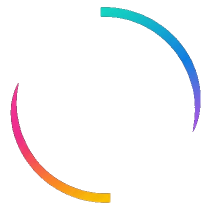

WhatsApp na nuvem
verificando…
No celular: WhatsApp › Aparelhos conectados › Conectar aparelho. O codigo vale cerca de 40 segundos.

JOBExtensão do WhatsApp
Desligando, o painel some do WhatsApp Web neste computador. Recarregue a aba depois de mudar.
No celular: WhatsApp › Aparelhos conectados › Conectar aparelho. O codigo vale cerca de 40 segundos.